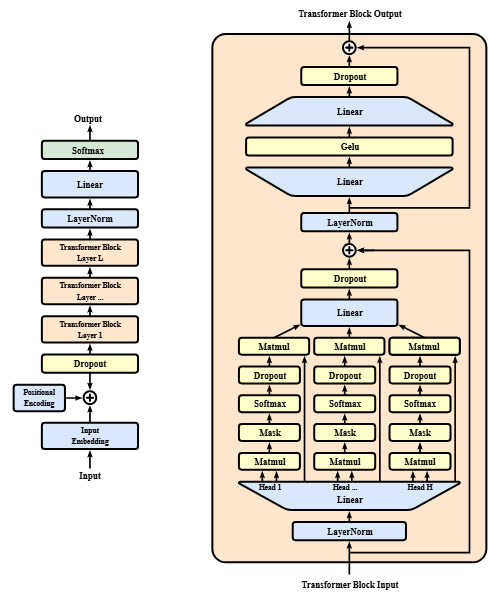
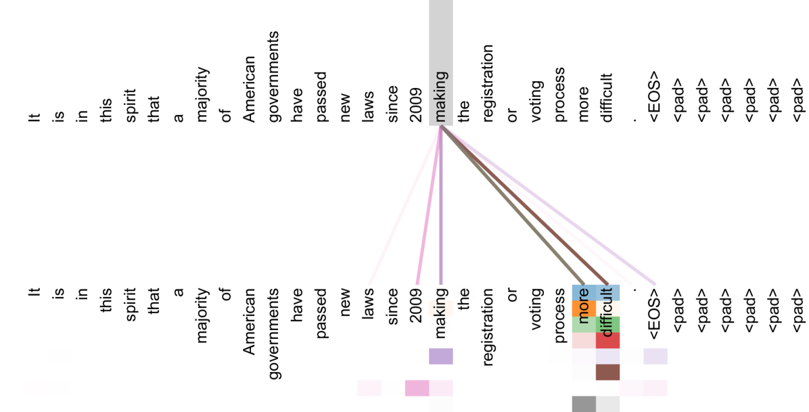

Transformers
Transformers are a type of deep learning model introduced in the 2017 paper "Attention Is All You Need." They use a mechanism called attention to identify relationships between different parts of an input. Unlike older models that process sequences step by step, Transformers can process many parts of the input in parallel during training.
Transformers are used in many modern AI systems, including chatbots, translation tools, coding assistants, and image recognition systems. They are especially important in language AI, where they help computers understand and generate human language.

How Transformers Work
Transformers first break input text into smaller pieces called tokens and convert them into numerical representations. They also use positional information to keep track of token order.
Their main feature is self-attention, which helps the model determine which parts of the input are most relevant to one another. For example, attention can help connect a pronoun to the person or object it refers to. Multiple layers allow the model to learn more complex patterns.

Types of Transformer Architectures
Transformers come in different designs depending on what they need to do. Three common types are encoder-only, decoder-only, and encoder-decoder models.
Encoder-Only Models
These models analyze input using context from both before and after each token. They are useful for understanding text, classifying information, and identifying important words. BERT is a well-known example.
Decoder-Only Models
These models generate text by predicting one token at a time, using the tokens that came before it. Many modern chatbots and large language models use this design.
Encoder-Decoder Models
These models use an encoder to process input and a decoder to produce output. They are useful for tasks such as translating languages and summarizing documents. The original Transformer used this design.

Applications of Transformers
Transformers are widely used in natural language processing (NLP), a field focused on helping computers work with human language. They can translate text, summarize articles, analyze sentiment, answer questions, and power search tools. By using context, they can better interpret words that have different meanings in different situations.
Many chatbots and writing assistants use large language models (LLMs), which are trained on large amounts of data to generate responses. Transformer-based LLMs can help explain concepts, write and debug code, and summarize information. However, their answers can still be incorrect and should be checked when accuracy matters.
Transformers are also used beyond text. Vision Transformers analyze images, while multimodal models can work with combinations of text, images, and audio. These systems are used in image understanding, speech applications, education, software development, and business.

Strengths and Limitations
Transformers can learn complicated patterns, use context effectively, and handle many different types of tasks. Their ability to process data in parallel during training has also helped researchers build powerful models using large datasets.
However, large Transformers can require significant computing power and memory. They may also reflect biases in their training data or produce convincing but incorrect answers. Researchers work to improve their efficiency and reliability, but human review is still important when mistakes could have serious consequences.